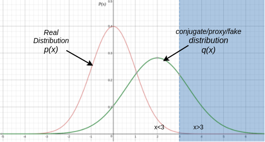
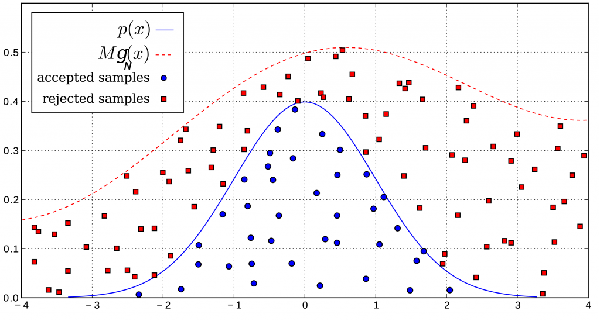
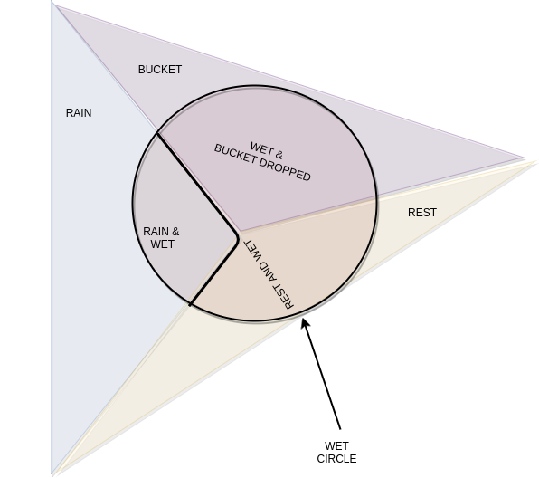
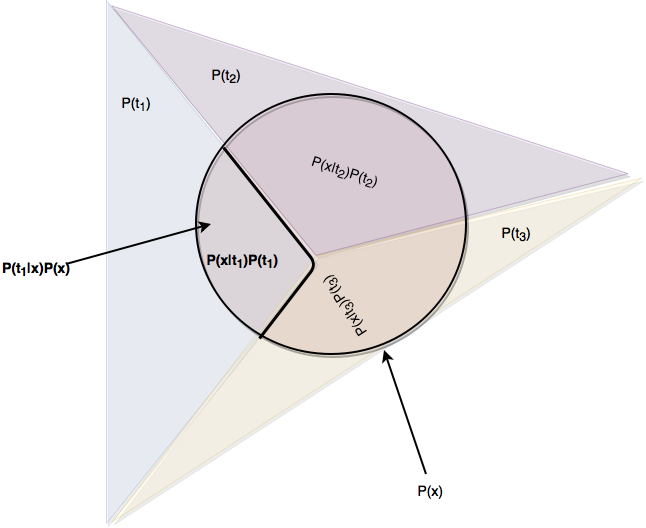

Statutory Warning : This is highly mathematical blog, hence only people have some familiarity with probability and Expectation should read it. Otherwise it can be a living nightmare
In this blog, we are going to uncover ways of estimating a distribution via Sampling. This is "very" important blog for practical implementation of various ML Algorithms. We will start of with a short story about Monte Carlo
Monte Carlo Approximation
Coin Tossing
What is the easiest way to find out the bias in coin ? in other words, whats $P(H)$? Think for a while . . .Simply toss the coin thousand times, and find the number of times head came divided by 1000. Thats it! Thats Monte Carlo for you guys. Here we are drawing 1000 random values from same coin tossing event. These 1000 values can be considered as one possible outcome of 1000 random variables which are drawn from the distribution. Its like drawing $(X_1,X_2,\cdots X_{1000})$ from $P$ or probability distribution where $X_i$ is random variable.so $(x_1,x_2,\cdots x_{1000})$ is one possibe outcome of drawing, something like $(H,T,\cdots T)$.
If you draw N random numbers $(X_1,X_2,\cdots X_{N})$ from a probability distribution $P$ which are IID's(Independent and Identically distributed ), then the bellow equation holds true. $$\lim_{N\rightarrow \infty} ||E(f(X))-\frac{1}{N}\sum\limits_{i=0}^Nf(X_i)|| = 0 $$
Mathematical Definition of Monte-Carlo IntegrationIf $X_1,X_2,\cdots$ are sampled from a distribution $P$, then we can approximate integratation of a function over such distribution as shown bellow : $$\int_Xf(X)p(x)dx \approx \frac{1}{N}\sum_{i=0}^{N}f(X_i)$$
The goal in the above equation is to estimate $E(f(X))$ for some function f. Now computing expectation is super easy for simple random variable like binomial with 2 trials $(P=Bin(2))$. If you do it monte-carlo way, you will throw a pair of coins 100's of times and estimate function for each of the outcome and average it out. If you do the same by standard approch, it looks something like this : $$E(f(X))=\frac{1}{3}\Big( P(\#H=0)f(0)+P(\#H=1)f(1)+P(\#H=2)f(2) \Big)$$ But let us say, if we have 10 dice throwing experiment. Can you tell me the number of points where we have to estimate value of f? It has to be on $6^{10}$ points or 60,466,176 points. In other words estimating function on a probability space becomes more and more difficult when X is of higher dimension and/or has large number of possible outcomes. This is the main reason why monte-carlo based methods are needed, where we sample a lot of random variables from Distribution($X_i \sim Bin(3)$) and get average estimation of its value.
Importance Sampling
Let us consider a case where my functions is defined as bellow where $X \sim \mathcal{N}(\mu =0,\,\sigma ^{2}=1) $: $$ f(x) = \left\{ \begin{array}{ll} 0 & \mbox{if } x < 3 \\ 1 & \mbox{if } x > 3 \end{array} \right. \hspace{2 cm} p(x) = \cfrac{1}{\sqrt{2\pi}}e^{-\cfrac{x^2}{2}} $$ Do you see anything strange in the above case? The regions where the pdf(probability density function) of the domain is high, you can see that the function's value is 0, and conversely, the regions where the function's value is high, the pdf is close to 0. Now if you try do monte carlo estimation using 100 points, its definitely gonna give you not so correct answer. You may need to conduct the experiment, 10000 times to get good enough estimate. But isn't it tedious? There will come a point, where you will start wondering, if there is a better way to get the expectation. Because I can't always generate soo many samples for estimation. Thats what a lot of mathematicians thought and we now have Importance Sampling.
"If only, we could have more samples where the function's value is high." What if we could sample from some other distribution? Thats exactly what lead to Importance sampling where we sample from some other distribution, where the function's value is high for substantial fraction of samples. Let us say, this new distribution is $q(x)$. It is generally chosen to be wide in varience, so that it overlaps with regions where the function is high and also with the regions where the function is not high. It is best to cover regions where the $p(x)$ was also dense.(which is around 0).
Hence we choose a fake distribution, $q(x)$ as $\mathcal{N}(\mu =1,\,\sigma ^{2}=4) $ instead of $p(x)$ which is $\mathcal{N}(\mu =0,\,\sigma ^{2}=1) $. This distribution is called fake, because that's not how actual distribution of samples are. Now comes the important part, as we are not sampling from p(x), we will have to weight each sample differently. Intuitively, weightage of points after 3 should be less because they are very less probable in actual distribution. This weightage is called importance weight.
Hold on to what you have read in the previous paragraph, because now we are going to find out the importance weight mathematically. A quick recap of difference between standard way and monte carlo way of estimation is essential before we proceed.
$$ E(f(X))=\int_{-\infty}^{\infty} f(x)p(x)dx$$
$$ E(f(X))=\frac{1}{N}\sum_{i=1}^{N}f(X_i)$$
$$ E(f(X))=\sum\limits_{x=-\infty}^{\infty} f(x)p(x) $$
$$ E(f(X))=\frac{1}{N}\sum_{i=1}^{N}f(X_i)$$
$$ E(f(X))=\int_{-\infty}^{\infty} \overbrace{\left(f(x)\frac{p(x)}{q(x)}\right)}^{\mbox{new function}}q(x)dx$$
$$ E(f(X))=\frac{1}{N}\sum_{i=1}^{N}f(X_i)*\overbrace{\frac{p(X_i)}{q(X_i)}}^{\mbox{imp w's}}$$ where $X_i \sim \mathcal{N}(\mu=1,\sigma^2=4) $ a.k.a $q(X)$
If you observe the bottom-right block of equation, you will observe that $X_i$ are sampled from $q(X)$. Which means a lot of them will fall beyond 3 mark. But thier contribution will be weighted(suppressed) by importance weight or ($p(X_i)/q(X_i)$). So it is called Importance sampling because we are not sampling according to actual distribution (p(X)) , rather we are sampling according to q(X) and then making up for the distortion by multiplying the function value by importance weight(p/q).
In terms of variance, you will observe that the variance of the newly sampled points will be lesser the previously sampled variance.
$Var(f(X))$ via Monte-Carlo Sampling : $1.3\times10^{-5}$
$Var(f(X))$ via Importance Sampling : $9.5\times10^{-8}$
The above variance is calculated by taking 1000 samples of 100 size, and for each you find out the mean. Now you find out the Variance based on variation in the expected value of sample(calculated for each 100 size sample) from actual exepected value of the function over the domain. This is calcuated for 1000 expected values obtained for each sample.
Inverse Transform Sampling a.k.a Smirnov Tranform
Let us say, we conducted an experiment on longitivity of 1500 mosquitoes, and found out that 500 die within (1/100)th of a day. Another 500 die between (1/100)th and (1/10)th of the day. Remaining 500 die in rest of the period. Now the thing, I want to generate a random number with such probability for simulation experiments. The problem is that I have only uniform density generator available. How do I generate such distribution? Think about it for a while.
A meter's rod solves it all
While thinking about solution for generating such distribution, I ended up going to my garage, where I saw my dad doing his daily car cleaning chores of the day.I asked him this burning question that I was having. He being mechenical engineer is wired to think in physical terms. So he took out the 1 meter rod and marker from the inventory box. He then marked 33 cm mark in the meter rod as $(1/100)^{th}$ and 66 cm mark as $(1/10)^{th}$. Now he told me as follow :
Dad : Ask your uniform random number generator to spit out some numbers between 0 and 1
Me : Ok pops, it says 0.2,0.5,0.9
Dad : Wa, Wa, Wait, Slow down
He now used a chalk to write seperate set of markings in the right of the scale, which is uniformly increasing from 0 to 0.01 untill it reaches 33 cm mark on scale, then it uniformly increases from 0.01 to 0.1 untill it reaches 66 cm mark, again it keeps increasing from 0.1 to 1 untill it hits 1 meter mark. He told this named this new scale as Mosquito Scale. He asked me to note down the numbers coming mosquito scale against the numbers which are spited out by random number generator and queried by the meter scale. In short output is mosquito scale, input in meter scale. Thats it!, bazinga, I had my mosquite life simulator!!!
In short, my dad discovered Smirnov sampling in his own mechenical way. Lets look at what has he done here in a more mathematical definition. Before we bunge into definition, have look at the intuition.
Intuition
What is more probable should get more space
If you are showing ads to a TV user, and each ad has some probability of generating revenue. The revenue it gives should be proportional to time allocated for that ad. Thats classic smirnov problem for you guys. Its like stretching out more probable(of generating revenue) ads, and shrinking out less probable ones. So that now they are all equally probable. It is like going towards uniform distribution, by stretching/shrinking down more and less probables to get it all flat. Think for a while, cause its super-important concept and a visualization. What if I say, that it seems like Inverse? Because we are flattening out the probabilities? Moving from $CDF[0,1]$ to $U[0,1]$. Well thats the intuition for you readers.
In Mosquito case, we need to give 33.33% bandwidth for [0,0.01] as its probability is 1/3. Similarly next 33% bandwidth for interval [0.01,0.1] pushing us to 66% mark and remaining 33% for [0.1,1]. That sounds familiar, cause its cumulative probability distribution which we are evening out. In the process of evening the range out, the domain gets transformed and becomes the CDF range points. Range becoming domain is nothing but inverse of CDF, and thats exactly what Smirnov Transform is.
Let us consider p as some probabilty density function and P,its cumulative distribution function s.t $P:\mathcal{R}\rightarrow [0,1] $, then $P^{-1}(x)$ where $x\in \mathcal{U}[0,1]$ will have pdf(density.func) as p.
Rejection Sampling
Rejection Sampling - name says it all. Its kind of sampling where we reject samples, based on some strategy.This kind of sampling in very useful, if you don't know the exact distribution or it is very difficult to compute, but know approximate shape of the distribution(or can find another distribution closely enveloping it). But lets consider simplest example for rejection sampling.
Let p(x)=$\mathcal{N}(0,1)$(Normal distr) be the pdf(probability density function) of interest. We first find out rectangle kg(x) which boxes it down. Such rectangle spans from -6 to 6 and has height $1/\sqrt{2\pi}$. Here $k = 12/\sqrt{2\pi}$ which gets multiplied with $\mathcal{U}(-6,6)$(uniform distr) with height $1/12$. Now here is the stratagy
Algorithm for rejection sampling
Note that g(x) is NOT a pdf, rather a scaled pdf(prob.density.func). It is scaled in such a way that $\forall x\in \mathcal{D}p(x)$, $\min\limits_{k} kg_{N}(x) \geq p(x)$ where $g_{N}(x)$ is actual pdf(i.e normalized). In other words g(x) is always greater than or equal to p(x) in its domain, and touches it at atleast one point.
Why does this stratagy work? For that I will ask you a bunch of questions and answer will lead us to a greater understanding
If you think about the questions, the intuition behind the stratagy will be right in front of you. Simply speaking, we are selecting an x from distribution of $g_N(x)$ and then accepting it with probability $p(x)/g(x)$. That means in some way, we are generating samples from distribution of p(x)
Use discretion in selecting g(x). If it's shape is too much different from p(x), then a lot of samples will be rejected. Fraction of total rejections = Area of region between f(x) and g(x) divided by total area of g(x).
Sneak peak into Bayesian Inference
Lets say you see you little brother enter your house totally drenched in water. You want to use Bayesian Inference to determine if there was actually any rain. In this scenario, you want to find the probability of raining outside given that your brother is wet. This is also called posterior in ML Terms.
Any thing post the observed event (whose probability are generally provided), "post condition=wetness/ post apocalypse" which can be possible cause to it, can be termed as posterior event, and its probability can be termed as posterior probability. Likelihood Probability, P(wet|rain) is possibility(probability) of event to be a cause the apocalype/wetness.In another cryptic way I can say , "Suppose causal event(rain or bucket) occurs, whats probability of causation to lead to to the actual event". Its like P(smoke|volcano) is 0.98, which means lets suppose volcano is cause of smoke, then probabity of eruption translating to smoke is 0.98.
It can also be seen as turning the posterior upside down in terms of conditional probability. In our example, P(rain|wet) is posterior, P(wet|rain), P(wet|bucket from top) is likelihood, and P(rain) is prior. Prior probability is nothing but information about independent probability of the conditional we are evaluating. So in posterior, if you remove the pre-condition(P(rain|wet)), it becomes, prior probability i.e P(rain).
The last but not the least, is the normalizing denominator or partition function. It is P(wet) which is broken down(partioned) into all possible sample events and their priors. Here it is P(wet|rain)*P(rain)+P(wet|bucket)*P(bucket)+P(wet|rest)*P(rest). Please Note that here, the causes of "wetness" are partioned by possible prior events(which could have lead to "wetness"). This includes (rain,bucket,rest).Note that P(rain)+P(bucket)+P(rest)=1 also holds true. $$\overbrace{P(rain|wet)}^{posterior} = \cfrac{\overbrace{P(rain)}^{prior}*\overbrace{P(wet|rain)}^{likelihood}}{\underbrace{P(wet)}_{partition}}$$ Also partition function can be broken into priors of causal events and thier likelihoods. $$\overbrace{P(wet)}^{partition}=\underbrace{\overbrace{P(rain)}^{prior(E1)}\overbrace{P(wet|rain)}^{likelihood(E1)}}_{\text{if suspected cause is rain}}+\underbrace{\overbrace{P(bucket)}^{prior(E2)}\overbrace{P(wet|bucket)}^{likelihood(E2)}}_{\text{if suspected cause is bucket}}+\underbrace{\overbrace{P(rest)}^{prior(E3)}\overbrace{P(wet|rest)}^{likelihood(E3)}}_{\text{if suspected cause is unknown}}$$
Let X be an event which can be caused by $Y\in\left\{Y_1,Y_2 \cdots Y_N\right\}$ causes. Here each $Y_i$ is a possible cause for X. Then, probability that "$Y_*$ caused X" is given by bellow equation :
$$P(Y_*|X) = \cfrac{P(Y_*)*P(X|Y_*)}{\sum\limits_{i=0}^{N}P(X|Y_i)*P(Y_i)}$$ In continuous domain, it can be written as bellow : $$P(Y_*|X) = \cfrac{P(Y_*)*P(X|Y_*)}{\int\limits_{\theta =-\infty}^{\infty} P(X|Y_{\theta})*P(Y_{\theta })dY_{\theta }}$$


From Independent Trials to Markov Chain
Let us say you are given two tasks. First is to toss a coin, and the second is to roll a dice. Do you think, that outcomes of coin will affect outcomes of dice ? No, right! Thats why we call such events independent. But lets say you are given a jar of toffees. It contains strawberry flavored and dark chocolate flavored toffee. But unlike coin and dice, where one outcome is independent of the other outcome, we have 90% tendency to select the other flavored toffee. Which means events are not independent. I will not want to eat same toffee two times in a row. To model such an event, we require understanding of sequence.


Markovian Property and Conditional Independence
Let us consider 5 events as shown in the figure, where A depends on B, B depends on C,D,E. Now, Markovian property states that $P(A|B,C,D,E)$ is $P(A|B)$. It means A is conditionally independent of C,D,E given that we know $P(A|B)$. In a simple linear chain of events, happening sequencially, it states that future sequence is independent of past sequence, provided we know present event.
MCMC aka Markov Chain Monte Carlo
We studied in the previous section how we try to estimate the posterior distribution by applying bayes theoram. But it can be pretty tedious because of the bellow reasons.Motivation for MCMC
Imagine a football ground and I need to estimate the distribution of wet regions in field. Now, comparing to large football field, the probability of wet regions is very less. If you use traditional monte carlo distribution estimation, it will fail miserably, because there are very high chances that the monte carlo samples do not fall into the wet regions. But what about Importance sampling? Even that will fail miserably because choice of the fake/auxillary distribution which we use for sampling can be cumborsome. So what is the sollution? The solution lies in MCMC.The idea for MCMC is that start from a random sample and keep moving untill you find region of reasonably good probability. You can visualize it as climbing a hill. Now you have a choice, either you can accept a new sample around the hilltop and probably towards another hilltop, or reject it. This is because, we have a vague idea that wet regions are connected in some ways. In mathematical sense, we become oblivious/ ignorant of the vast regions of insignificant probability and only concentrate on the caravan of high probability regions which are loosely connected. So we move in form of a markov chain (a chain of samples), always deciding about going ahead or staying back(reject the new sample) based on a deciding factor. Now the intuition is that such group of samples will best describe the distribution.
Do note that unlike importance or rejection sampling you don't need any specific distribution to start off with.
Simple Case - Gaussian Prior, Gaussian Likelihood, Gaussian Posterior
References
1. Importance Sampling, Jessi Cisewski, CMU, June 20142. Mathematical Monk Youtube channel, Lecture 17-18
3. Aaron Kramer, Introduction to Bayesian Inference 4. MCMC Blue Hilltop image is taken from MCRobot Course Material